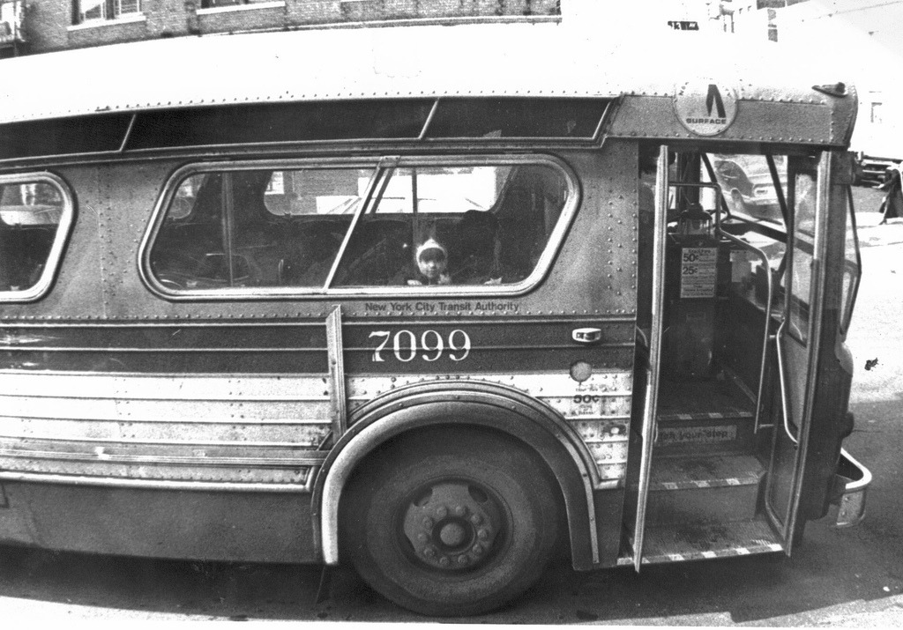

All aboard, 1970s. Fifty cents.
These old buses trapped so much heat inside that even in the winter riders would have to crack the windows a little. A skilled 10-year-old with a grasp of elementary physics could hurl a snowball through the slightly opened window of a bus moving down Broadway…